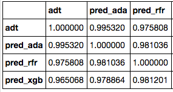
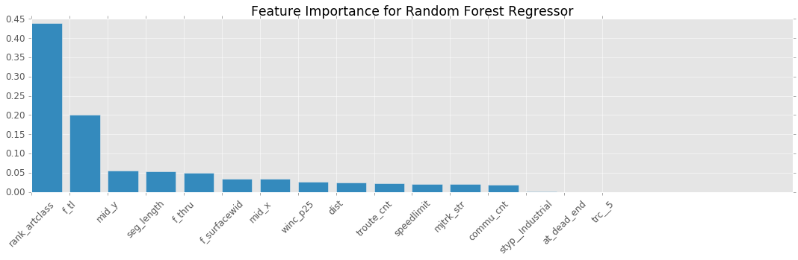
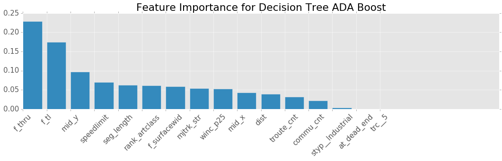

Seattle Data Dive Objective 1 Results
Vehicle Exposure Model
Correlation Summary:

Key: ADA = ADA Boost Regression, RFR = Random Forest
Observed ADT vs. Random Forest Regressor

Observed ADT vs. ADA Boosted Regression
